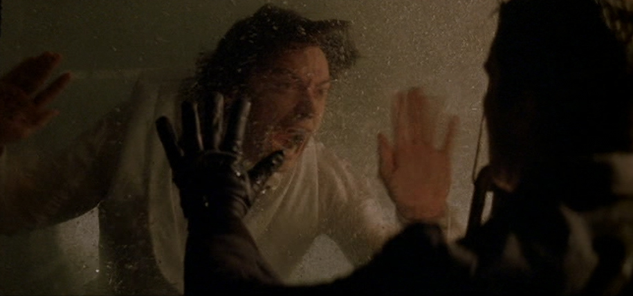

Cuenta con tanto un guión excepcional y un montaje cinematografico digno de el director Christopher Nolan
El actor protagonista es Christian Bale
Esta es una escena que para mi representa el sacrificio que hacen pesonajes para ser los mejores en su profesión.
